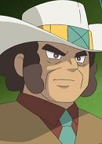

|  |
Clay |
Pokemon Black and White |
Clay is a businessman in the mining industry who is the Gym Leader of the Driftveil City's Gym. He speicalizes in Ground-type Pokemon. He is a hard-working, busy man. |
| |
Grey |
Pokemon XY |
Grey is an old man who lives with his wife in Calanthe Town. He and his wife, Florence, lived together with Flabebe. He wants his wife to be happy and find a flower for Flabebe. |
| |
McGinty |
Pokemon XY |
McGinty is photographer who works in Geosenge Town and a friend of Gurkinn. He likes to take photos of groups so they can keep it as souvenirs. He knows a lot about the mountains and valuable stones that are nearby the town. |